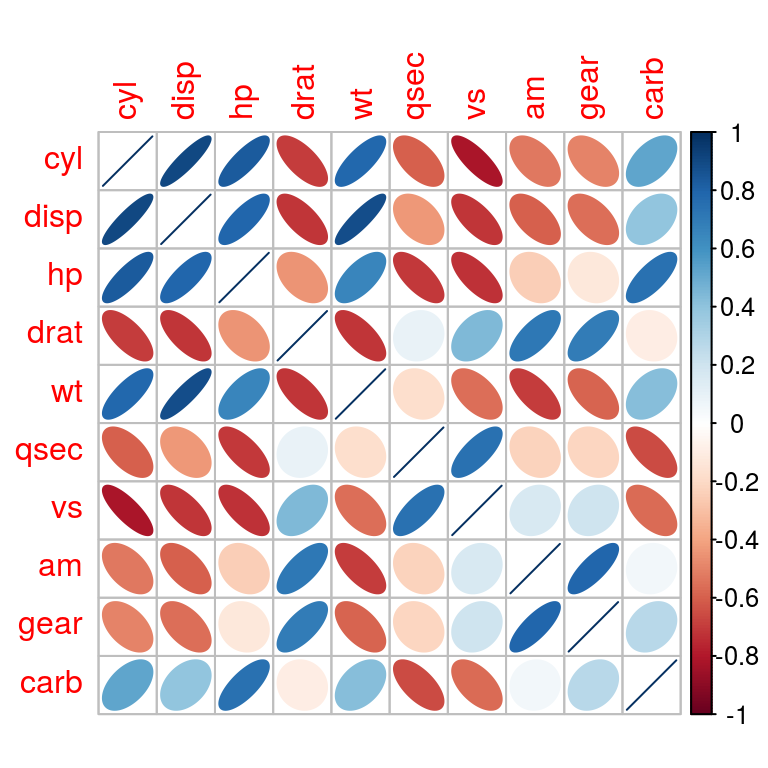
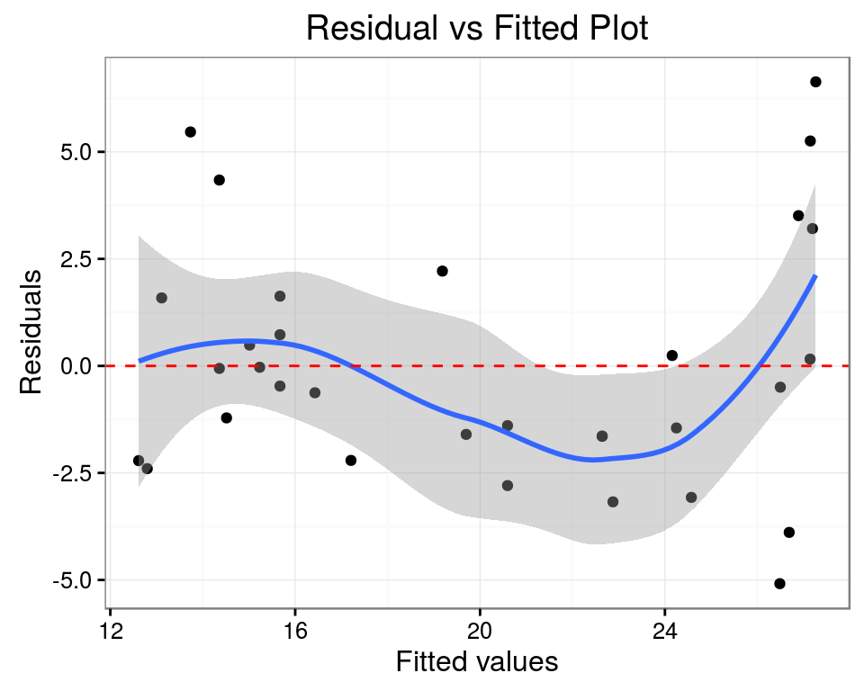
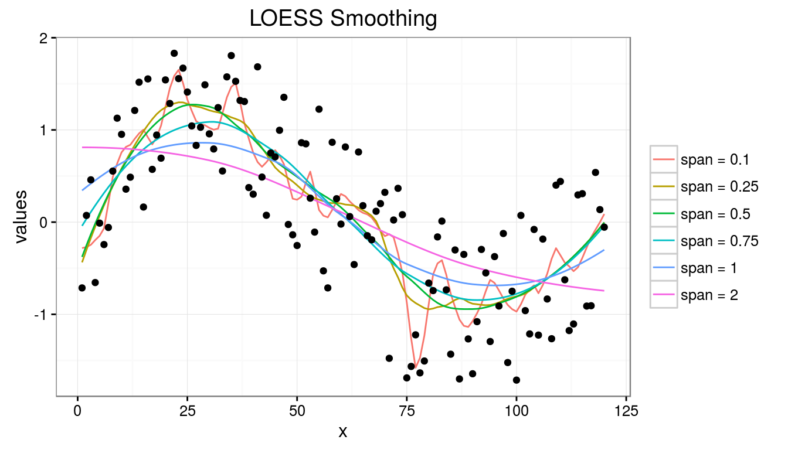
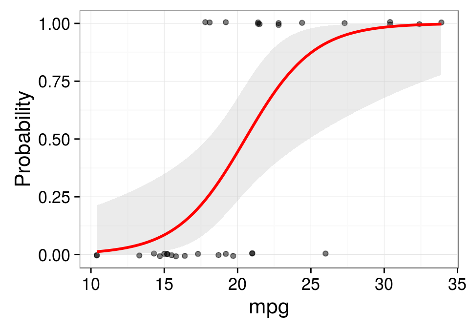

A data frame with 32 observations on 11 variables.
| var | Description |
|---|---|
| mpg | Miles/(US) gallon |
| cyl | Number of cylinders |
| disp | Displacement (cu.in.) |
| hp | Gross horsepower |
| drat | Rear axle ratio |
| wt | Weight (1000 lbs) |
| qsec | 1/4 mile time |
| vs | V/S |
| am | Transmission (0 = automatic, 1 = manual) |
| gear | Number of forward gears |
| carb | Number of carburetors |
head(mtcars)## mpg cyl disp hp drat wt qsec vs am gear carb
## Mazda RX4 21.0 6 160 110 3.90 2.620 16.46 0 1 4 4
## Mazda RX4 Wag 21.0 6 160 110 3.90 2.875 17.02 0 1 4 4
## Datsun 710 22.8 4 108 93 3.85 2.320 18.61 1 1 4 1
## Hornet 4 Drive 21.4 6 258 110 3.08 3.215 19.44 1 0 3 1
## Hornet Sportabout 18.7 8 360 175 3.15 3.440 17.02 0 0 3 2
## Valiant 18.1 6 225 105 2.76 3.460 20.22 1 0 3 1
Given a data set \({\{y_{i},\,x_{i1},\ldots ,x_{ip}\}_{i=1}^{n}}\) of n statistical units, the model takes the form: \[
y_{i}=\beta _{1}x_{i1}+\cdots +\beta _{p}x_{ip}+\varepsilon _{i}=\mathbf {x} _{i}^{\rm {T}}{\boldsymbol {\beta }}+\varepsilon _{i},\qquad i=1,\ldots ,n,
\] where,
\(y_{i}\) is the response variable,
\(x_{i1},\,x_{i2},\,\ldots ,\,x_{ip}\) are the regressors,
\(\beta\) is a p-dimensional parameter vector (estimated by least-squares method)
\(\epsilon_{i}\) is the error term.
We will regress the mpg variable onto disp, cyl, am. A linear model is fitted by least-squares, which minimizes the sum of squared residuals and leads to a closed-form expression for the estimated value of the unknown parameter \(\boldsymbol \beta\).
Objective: \[ {\hat {\boldsymbol {\beta }}}={\rm {arg}}\min _{\boldsymbol \beta }\,\left\lVert \mathbf {y}-\mathbf {X}{\boldsymbol \beta } \right\rVert , \]
which leads to: \[ {\hat {\boldsymbol {\beta }}}=(\mathbf {X} ^{\rm {T}}\mathbf {X} )^{-1}\mathbf {X} ^{\rm {T}}\mathbf {y} ={\big (}\,{\textstyle \sum }\mathbf {x} _{i}\mathbf {x} _{i}^{\rm {T}}\,{\big )}^{-1}{\big (}\,{\textstyle \sum }\mathbf {x} _{i}y_{i}\,{\big )}. \]
model <- lm(mpg ~ cyl + disp + am, data = mtcars)
model$coefficients## (Intercept) cyl disp am
## 32.91685995 -1.61821911 -0.01559041 1.92872540Adjusted R-squared: 0.7521509
F-statistic: 32.3586942

# sales vs predicted sales
head(data.frame(mpg = mtcars$mpg, pred = predict(model)), 10)## mpg pred
## Mazda RX4 21.0 22.64180
## Mazda RX4 Wag 21.0 22.64180
## Datsun 710 22.8 26.68894
## Hornet 4 Drive 21.4 19.18522
## Hornet Sportabout 18.7 14.35856
## Valiant 18.1 19.69970
## Duster 360 14.3 14.35856
## Merc 240D 24.4 24.15687
## Merc 230 22.8 24.24885
## Merc 280 19.2 20.59459Suppose a dataset consists of \(N\) pairs of observations, \(\{(x_i, y_i)\}_{i=1}^N\). For fitting a point \(x\), define a bandwidth \(h(x)\) and a smoothing window \((x−h(x),\,x+h(x))\). The LOWESS algorithm finds the vector \(\boldsymbol\beta\) of coefficients which minimizes the locally weighted sum of squares \[
\boldsymbol{\hat\beta} = \underset {\boldsymbol\beta \in \mathbb R^{p + 1}}{\arg\min} \sum_{i=1}^N w_i(x)(y_i - \langle{\boldsymbol\beta, \, A(x_i - x)}\rangle)^2
\] where,
\[
\begin{align}
A_0(v) = 1, &&
A_k(v) = \frac {v^k}{k!}, &&
w_i(x) = W\left(\frac {x_i - x}{h(x)}\right),
\end{align}
\] \(W(u)\) is a weight function that assigns largest weight to observations close to \(x\).
The local regression estimate is \[ \hat f(x) = \langle \boldsymbol {\hat\beta}, \, A(0) \rangle = \boldsymbol {\hat\beta}_0. \]
set.seed(19)
period <- 120
x <- 1:period
y <- sin(2*pi*x/period) + runif(length(x),-1,1)
spanlist <- c(0.10, 0.25, 0.50, 0.75, 1.00, 2.00)
loess.lines <- sapply(spanlist, function(s) {
y.loess <- loess(y ~ x, span = s, data.frame(x = x, y = y))
cat("span = ", format(s, nsmall = 2), ", rse: ", y.loess$s, "\n", sep = "")
predict(y.loess)
})## span = 0.10, rse: 0.5825607
## span = 0.25, rse: 0.5787946
## span = 0.50, rse: 0.5719129
## span = 0.75, rse: 0.5816912
## span = 1.00, rse: 0.6184237
## span = 2.00, rse: 0.7045324
Formally, the logistic regression model is that \[ \log {\frac {p(x)}{1 - p(x)}} = \beta_0 + \beta^T x. \] Suppose that we are given a sample \((x_i, y_i)\), \(i = 1,\ldots,n\), where \(y_i\) denotes the class \(\in \{1, 2\}\) of the \(i\)-th observation. Then, assuming that the class labels are conditionally independent, the log-likelihood is given by \[ \begin{aligned} \ell(\beta_0, \beta) &= \sum_{i=1}^n \log {P(C = y_i \mid X = x_i)} &\\ &= \sum_{i=1}^n \left\{u_i \cdot (\beta_0 + \beta^T x_i) - \log {(1 + \exp (\beta_0 + \beta^T x_i))} \right\} \end{aligned} \] where, \[ \begin{align} u_i = \begin{cases} 1 & {\mbox{if }} y_i = 1 \\ 0 & {\mbox{if }} y_i = 2 \end{cases} \end{align} \]
The coefficients are estimated by maximizing the likelihood, \[ \hat\beta_0, \hat\beta = \underset {\beta_0 \in \mathbb R, \beta \in \mathbb R^p}{\arg \max} \ell(\beta_0, \beta) \]
mtcars.glm <- glm(vs ~ mpg, data = mtcars, family = binomial)
mtcars.glm##
## Call: glm(formula = vs ~ mpg, family = binomial, data = mtcars)
##
## Coefficients:
## (Intercept) mpg
## -8.8331 0.4304
##
## Degrees of Freedom: 31 Total (i.e. Null); 30 Residual
## Null Deviance: 43.86
## Residual Deviance: 25.53 AIC: 29.53
In linear regression, the intercept coefficient is the expected value of the response when the predictor variables is zero, and the slopes represent the expected change in response for a unit change in the corresponding predictor. In the linear regression example, the average value of value of mpg is 32.9168599 and for every 1 unit increase in cyl, mpg changes by -1.6182191 units. Similarly, for every 1 unit increase in disp, mpg changes by -0.0155904 units. Regression is an enormously important tool for business and financial analysis. As another example, we may choose the rate of inflation as the target variable, and create a regression model to estimate it with the following variables: GDP, import-to-export ratio, number of unemployed as the predictors. A crude NASDAQ stock trading could be modeled as: \[(\% {Number \, of \, Trades}_t^{\lambda} - 1) \, / \, \lambda = \beta_0 + \beta_1 {Firm Size}_t + \beta_2 {Volatility}_t + \beta_3 {TradeSize}_t + \beta_4 {Price}_t + \epsilon_t \].
LOESS assumes no functional form and doesn’t produce a regression function or slope parameters that is easily represented by a mathematical formula.
The logistic slope can be interpreted as the effect of a unit change in predictor variable on the log odds ratio when the other variables in the model is held constant. The logistic intercept is the log odds estimate for the whole population. In the example for logistic regression, we can infer that the odds of having a V-engine, gets scaled by \(\mathrm{e}^{0.4304135} = 1.5378933\) when mpg increases by one unit. Let us consider another example of Logistic Regression applied to medical domain. Lactate and Urea levels as metabolic markers can be used to investigate the survivability of a patient in accident and emergency unit. Suppose a logistic regression model could be constructed as follows to predict a patient’s death: \[\log {\frac {p}{1 - p}} = -5.716 + (0.270 \times lactate) + (0.053 \times urea) + (1.425 \times age\_group)\]. We can see that odds of death gets multiplied by \(\mathrm{e}^{0.270} = 1.31\) for ever one unit increase in lactate levels in serum.